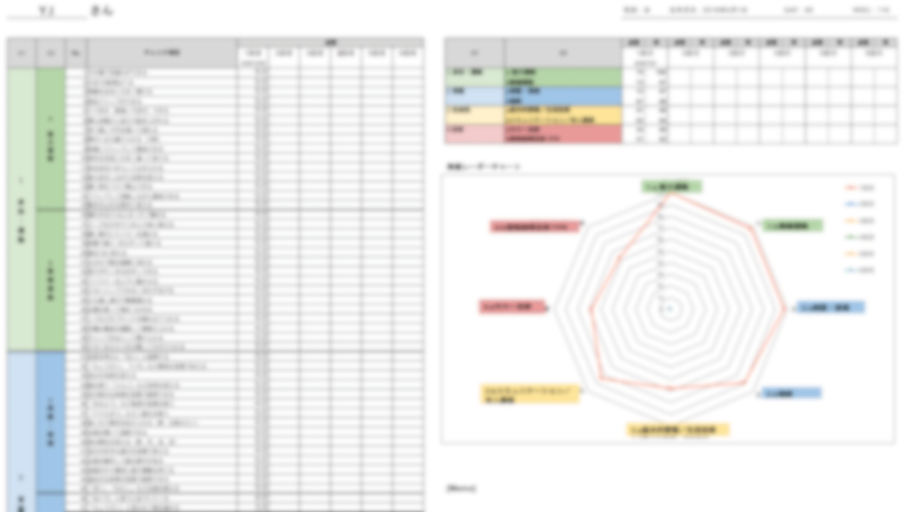
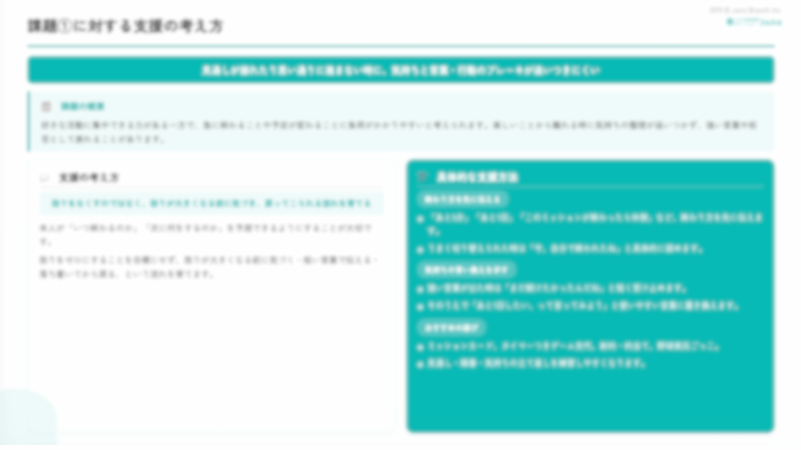
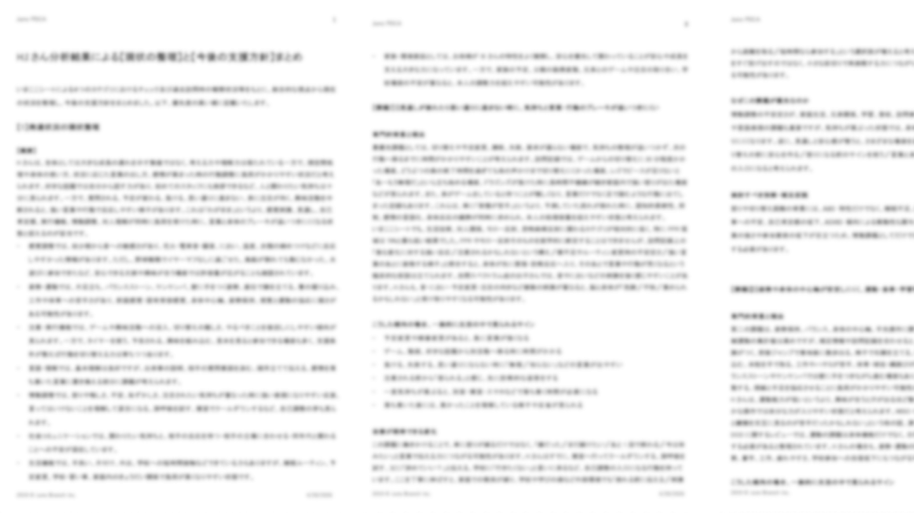

Junoによる発達支援の考え方
「なんとなく気になる」から始まる支援は、目的が曖昧なままでは成長との関連性が見えづらくなります。Junoでは、「いまここシート」という独自のチェックツールと学術的知見を組み合わせた仕組みで、経験や勘・特定のスタッフに依存しない、根拠ある継続的な訪問支援を実現しています。
お子さまの「現在地」を、
遊びの中で確認します。
お子さまの発達は、年齢や診断名だけでは整理しきれないほど、多くの要素が重なり合っています。Junoでは、20,000回以上の訪問を通じて得たデータから独自に監修したチェックツール「いまここシート」を用いて、お子さまの今の状態（現在地）を複数の分野から丁寧に見ていきます。
チェックは、お子さまに「テスト」と感じさせない形で行います。ご家庭での遊びや関わりの中で、看護師がお子さまの自然な姿を観察し、ご家族からのお話と合わせて整理していきます。お子さまにもご家族にも、過度な負担がかからない形で進めていきますので、ご安心ください。
診断の有無は問いません。「なんとなく気になる」「グレーゾーンかもしれない」という段階からご利用いただけます。
実際のシートをご覧ください
「いまここシート」では、お子さまの今できていることと、これから育てたい力の両方を整理します。「できていない部分」を探すためのものではなく、お子さまの強みと、これから一緒に育んでいきたい部分を、ご家族と共有するための地図のようなものです。




このシートは、ご家庭での共有はもちろん、園や学校との情報共有にも活用していただけます。お子さまの状態を専門用語ではなく、関わるすべての方が共通して理解できる形で整理することを大切にしています。
「なんとなく」ではなく、
「根拠」から支援を組み立てます。
いまここシートで把握したお子さまの現在地・特性を、私たちはそれだけで判断しません。Junoでは、いまここシートに加えて、訪問記録、ご家族からのヒアリング情報、医療機関での検査結果（共有いただける場合）、そして臨床データが豊富な学術論文・研究知見を組み合わせて、お子さまの「育ちのつまづきの背景」を多面的に分析します。
この一連の流れを、私たちは Juno PDCA と呼んでいます。
| ステップ | Junoが行うこと |
|---|---|
| Plan（仮説） | いまここシート・訪問記録・ヒアリング・検査情報・学術知見をもとに、現在の課題と改善アプローチの仮説を組み立てます。 |
| Do（実践） | 仮説に基づいた関わり方を、訪問の中でお子さまの負担にならない形で実践します。 |
| Check（記録） | 訪問ごとに、お子さまの反応・変化・安心できた場面を詳細に記録し、臨床データとして蓄積します。 |
| Act（更新） | 蓄積した記録をもとに仮説を検証し、必要に応じてアプローチを更新します。 |
Junoの訪問は、お子さまのための観察と仮説検証の積み重ねです。
経験や勘ではなく、
データと仮説で続ける訪問。
発達支援において、私たちが避けたいのは、「支援した気になっているけれど、お子さまが本当に成長しているかどうかわからない」という状態です。
目的が曖昧なまま訪問を重ねるだけでは、お子さまの成長と支援のつながりは見えてきません。重ねてきた関わりが、お子さまの育ちに本当につながっているのか──。この問いに向き合い続けるために、Junoでは Juno PDCAというロジックに沿って、訪問看護を運営しています。
- 定期的な再検証：いまここシートを一定期間ごとに再実施し、課題の改善状況を客観的に確認します。
- チームでの見立て更新：特定の看護師の経験や勘に依存せず、複数の視点で支援方針を見直します。
- 学術知見との接続：新しい研究知見や臨床データを継続的に取り入れ、支援アプローチをアップデートします。
- 担当看護師が変わっても続く支援：記録と仮説がチームで共有されているため、特定のスタッフに依存しない支援体制を維持します。
振り返りでは、「できるようになったか」だけを見るのではなく、以下の視点から経過を確認します。
- 安心して過ごせる時間が増えているか
- 負担がかかりやすい状況に変化があるか
- 関わり方の調整によって、反応の違いが見られるか
誰が訪問しても、ぶれない支援を。
だから、長く・安定して、お子さまとご家族に伴走できます。
Junoが大切にしているのは、「誰が訪問しても同じ質の観察と分析ができる体制」です。シート・記録・学術知見・チームでの見立て更新という仕組みで、お子さまの成長を支え続けます。それが、私たちが児童精神と発達の領域で訪問看護を続けてきた中で辿り着いた答えです。
お子さまの「現在地」を、
一緒に整理してみませんか？
訪問看護は医療保険が適用されます。まずはお気軽にご相談ください。
医療保険適用・費用負担なし